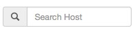
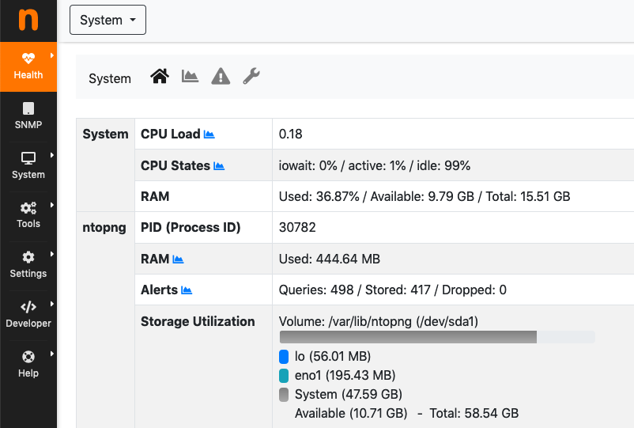
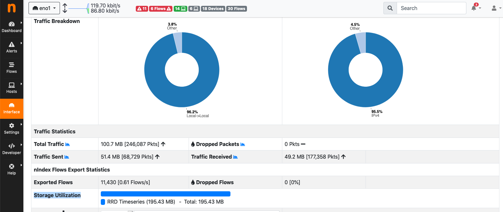

Другие страницы и информация
Администрация

В этом разделе показан текущий пользователь, вошедший в систему, а также кнопка выхода из системы, позволяющая отключить пользователя от ntopng GUI.
Колокольчик уведомлений показывает новости из ntop блог.
Поиск

Поле поиска
Кнопка «Поиск» в правом верхнем углу строки заголовка (или Ctrl+Ф на любой странице) открывает поиск коробка. При вводе результаты отображаются в группах, при этом искомый текст выделяется:
Страницы меню: записи меню, сгруппированные по разделам меню (все они, пока окно поиска открыто). пустой). Страница, которая недоступна (отсутствует лицензия, настройки или данные), выделена серым цветом и заблокирована. значок, подсказка которого объясняет, почему.
Предпочтения: предпочтения, которые можно включить или выключить, до 8, имя которых начинается с искомый текст первым.
Хосты, MAC-адреса, сети и многое другое: хосты (по IP-адресу или имени), MAC-адреса, локальные сети, автономные Системы, SNMP устройства и интерфейсы, а также активы инвентаризации активов. Значки слева сообщают тип результата, значки добавляют такие детали, как интерфейс, в котором был найден хост, IPv6 или Неактивно. Значки справа открывают оповещения и, с помощью ClickHouse, исторические потоки хозяин. Если ничего точно не совпадает, ярлык ищет искомый текст в исторических потоках.
Стрелки вверх и вниз позволяют перемещаться по результатам. Входить открывает выбранный и Esc закрывает окно поиска.
Щелкнув по предпочтениям (или нажав Входить на нем) включает или выключает его сразу, не выходя из текущая страница. Настройки, которые нельзя изменить (отсутствует лицензия, значение, заданное из командной строки или настройка, которая зависит от другой, которая отключена), отображаются серым цветом со значком замка, всплывающая подсказка которого объясняет почему. Настройки отображаются только для пользователей, которым разрешено их изменять, и только во время поиска. Переключатель настроек (по умолчанию включен) включен.
Настройки поиска
Значок ползунка рядом с полем поиска отображает настройки поиска (также в Настройки → Предпочтения → Пользовательский интерфейс), которые выбирают, что будет искать поиск. Изменение сохраняется сразу, и результаты обновлено:
Поиск во всех интерфейсах: ищет хосты на всех интерфейсах, а не только на выбранном. Выкл. по умолчанию; всегда включен в Обзоре (см. Легкий вид).
Поиск хостов, Поисковые сети, Поиск автономных систем: включено по умолчанию.
Поиск SNMP: включено по умолчанию, требуется лицензия Enterprise M.
Поиск исторических потоков: включено по умолчанию, требуется ClickHouse.
Поиск активов: отключено по умолчанию, так как он запрашивает базу данных активов при каждом поиске. Требуется Лицензия предприятия М.
Настройки поиска: перечисляет предпочтения в результатах, включено по умолчанию.
Пользователи, которым не разрешено изменять настройки, видят их только для чтения.
Исторические графики
ntopng представляет исторический взгляд на записанные данные временных рядов .

Исторические графики
В верхнем левом раскрывающемся списке можно выбрать данные таймсерий для отображения. Помимо фактических данных временных рядов, на диаграмме также будет показано:
Серия сравнений с прошлым. На картинке выше, 30 м назад покажет трафик интерфейса 30 минут назад.
Средняя линия, прямая линия, очерчивающая среднее значение таймсерии.
95-й процентиль, прямая линия, очерчивающая 95-й процентиль. процентиль стоимость трафика. Он указывает значение, при котором 95% точек таймсерии находятся ниже него.
Используя селекторы времени, можно указать конкретный временной интервал для графика. Также возможно использование предустановленных разрешений для отображения последних данных за заранее заданные интервалы времени. например последние 5 или 30 минут. Нажав на -30 и +30 кнопки также можно перейти к соответствующий интервал в прошлом или будущем.
Данные таймсерий показаны на диаграммах выборочно. Для получения более точных данных необходимо чтобы увеличить масштаб диаграммы. Это можно легко сделать, перетащив мышь на указанный интервал; Диаграмма будет обновляться динамически и отображать интервальные данные с более высоким разрешением. Двойной щелчок по диаграмма выполняет уменьшение масштаба.
Нажав на  значок, можно получить постоянную ссылку на текущий вид, чтобы поделиться
с другими. Если запись трафика включается, нажав кнопку значок можно
загрузить PCAP файл интерфейса или трафика хоста в указанный период времени. В зависимости от выбранного
исторические временные ряды, это может быть доступно или нет.
значок, можно получить постоянную ссылку на текущий вид, чтобы поделиться
с другими. Если запись трафика включается, нажав кнопку значок можно
загрузить PCAP файл интерфейса или трафика хоста в указанный период времени. В зависимости от выбранного
исторические временные ряды, это может быть доступно или нет.
Нажав на значок можно Снимки.
Монитор хранения
Согласно конфигурации, ntopng хранит на диске различные типы информации, в том числе:
Таймсерии (например, RRD)
Дампы пакетов (запись трафика)
Потоки
Объем ресурсов с точки зрения дискового пространства может сильно различаться в зависимости от настроенных данных. удержание для каждого компонента, количество хостов и потоков. Мониторинг пространства, используемого ntopng на диске становится критически важным, чтобы убедиться, что вы превышаете ожидаемый объем ресурсов, и убедитесь, что средства автоматического освобождения пространства в ntopng настроены правильно.
Страница состояния выполнения Системный интерфейс в ntopng показывает текущий Использование хранилища, обеспечивая общую используемое дисковое пространство и разбивка по дисковому пространству, используемому ntopng для хранения информации. для каждого интерфейса.

Страница состояния выполнения
Нажав на интерфейс, вы будете перенаправлены на Статус интерфейса страница. На этой странице вы можете увидеть общее дисковое пространство, используемое текущим интерфейсом, и разбивку по объем пространства, используемого для каждого компонента (таймсерии, дампы пакетов, потоки).

Страница состояния интерфейса
Из Статус интерфейса странице мы можем легко проверить, не использует ли какой-либо компонент больше места, чем ожидаемо. На этом этапе мы можем перейти на страницу конфигурации для этого конкретного компонента и просмотрите настройки хранения данных. Например, поход в Запись трафика страница, мы можем посмотреть, каково фактическое использование диска, проверив дисковое пространство, используемое для дампов пакетов, и мы сможем просмотрите настроенный Максимальное дисковое пространство в зависимости от количества ресурсов, которые мы хотим зарезервировать для этого компонента.

Страница записи трафика интерфейса
Табличный вид
Под диаграммами таймсерий имеется табличное представление, в котором показаны исторические данные для указанный период времени в табличном формате.

Исторический табличный вид
Нажав на раскрывающийся список слева, можно выбрать конкретные данные для просмотра. На данный момент реализованы следующие виды:
Основные протоколы: трафик основных протоколов и процентная доля каждого протокола в общем объеме трафика.
Топ-категории: трафик верхних категорий и процент каждой категории в общем трафике.
Самые популярные отправители: основные локальные хосты отправителей и их трафик.
Лучшие получатели: основные хосты локальных получателей и их трафик.
Верхние интерфейсы: верхние интерфейсы устройства SNMP.
Страница ошибки
Если страница не может быть отображена, вместо этого ntopng открывает страницу ошибки. На странице показано:
Код ошибки (например. Ошибка 404) и что пошло не так.
Что вы можете сделать, чтобы это исправить.
Адрес страницы, которую вы пытались открыть.
Вот возможные ошибки:
Запрошенная страница не найдена (404): адрес неправильный или страница не работает существуют в этой версии ntopng. Проверьте адрес.
Запрещенная страница (403): вашему пользователю не разрешено открывать страницу. Спросите администратора изменить свой пользователь разрешения.
Требуется лицензия на версию Professional/Enterprise. и Лицензия на корпоративную версию требуется (403): страница является частью редакции ntopng, которой у вас нет. Видеть Доступные версии и лицензирование чтобы узнать, какое издание вам нужно.
Указанный URL-адрес содержит недопустимые/опасные символы. (400): адрес содержит символы, которые ntopng отказывается по соображениям безопасности. Удалите их и повторите попытку.
Внутренняя ошибка сервера (500): ntopng не удалось создать страницу. Повторите попытку позже; если проблема не устранена, проверьте журнал ntopng.
В настоящее время невозможно обслужить запросы (503): ntopng запускается или выключается. Подождите несколько секунд, затем перезагрузите страницу.
Нажмите Возвращаться чтобы вернуться на страницу, с которой вы пришли, или Дом чтобы открыть панель управления ntopng.